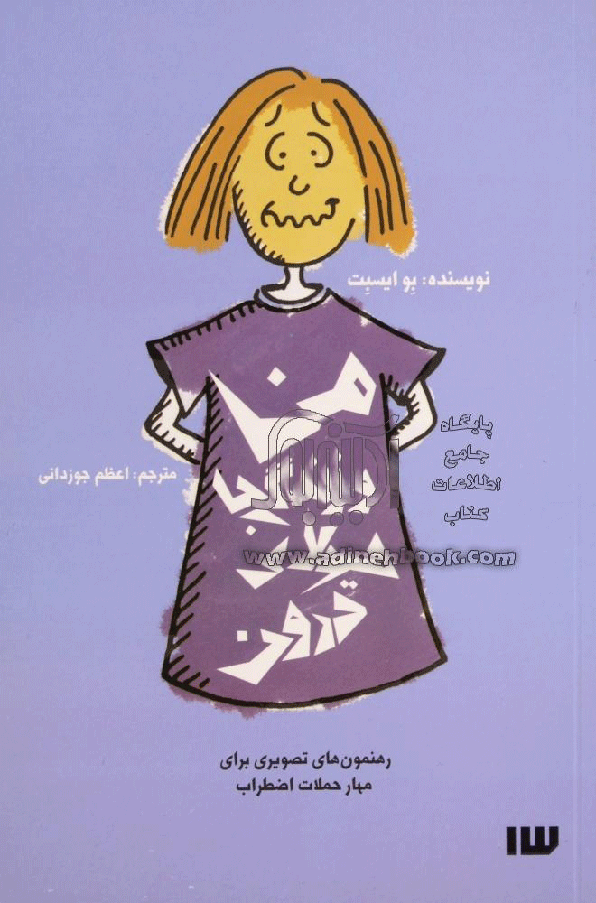

بیشک رمز موفقیت را در هر عرصهای میتوان «خودباوری» دانست.
حقیقتی که در فقدان آن تواناییهای درونی و ذاتی خویش را نادیده انگاشته و موفقیت دیگران را موهبتی خدادادی میانگاریم که نصیب آنها شده و سهم ما تماشای
ن و گاه حسرت و در تمنا ماندن است. همین باور، دیدگاه ما در احساس شکست خوردن در یک موضوع و یا حس موفق شدن در موضوعی دیگر است.
این دیدگاه از فقدان آموزش فرد و ناآگاهی او از توانایی خفته در درون او است. کافی است موانع پیش رو و بازدارنده را شناسایی کنیم و گامبهگام
در راستای حذف آنها پیش برویم؛ و این میسر نخواهد شد جز با علم بر عدم شناخت و آگاهی و تمرکز بر تواناییهای بالقوه وجود خودمان. البته که نمیتوان یک نسخه برای تمام مردم جهان پیچید.
«در باب اعتماد به نفس» یک کتاب درباره اعتماد به نفس است که آلن دوباتن آن را نوشته. او با شناسایی این موانع در
افرادی با ویژگیهای مختلف، تلاش کرده راهحلهایی کارا پیشنهاد دهد. آلن دوباتن این راهحلها را با توجه به ویژگیهای فردی
افراد ارائه میدهد و در پی ارائه یک راه برای همگان نیست. او در فصلهای مختلف کتاب به وجوه مختلف اعتمادبهنفس،
پرداخته است. او در این کتاب و پاسخ به کسانی که اعتمادبهنفس را غیرقابل تغییر دانسته و معتقدند که آن امری ذاتی
است و حدی مشخص و غیرقابل تغییر دارد، گفته است: «اعتمادبهنفس نوعی مهارت است و نه هدیهای از سوی خداوند
اعتمادبهنفس درواقع مجموعهای از ایدهها در مورد جهان و موقعیت طبیعی ما در آن است»
کسی را میشناسید که حداقل یک بار در زندگی، دچار استرس و اضطراب نشده باشد؟ آیا خودتان در تمامی موقعیتهای
روزمره، میتوانید آرامشتان را حفظ کنید؟ به نظر میرسد که استرس، جزء جدا نشدنی زندگی امروز ماست. سرعت اتفاقها و
مسائلی که هر روز با آنها دست و پنجه نرم میکنیم، به قدری زیاد است که گاهی از آنها جا میمانیم و دچار استرس و
اضطراب میشویم. پس عجیب نیست اگر پس از یک تنش کاری، پیش از امتحانی سخت یا در زمانِ رویارویی با یک بحران
عاطفی، آنچنان درمانده شویم که دربهدر دنبال راهکاری برای درمان استرس بگردیم. انواع مختلف اضطراب نه تنها بر روح و
روان ما و البته جسممان تاثیر میگذارد، بلکه اطرافیانمان را هم به چالش میکشد.
در این یادداشت، ۲ کتاب معرفی کردهایم که برای مدیریت و درمان استرس میتوانند مفید باشند.
من و زندگی با هیولای درون
این کتاب، با نویسندگی بو آیسبت، برای کسانی است که احتمالا حوصلهی خواندن متنهای طولانی را ندارند. «من و زندگی با هیولای درون» با
بهکارگیری تصاویر طنزآلود، به اشخاص درگیر با هیولای استرس، راهکارهایی را نشان میدهد. لحن کتاب، حالت محاوره دارد و به سادگی
درک میشود. اعظم جوزدانی، این کتاب ۱۱۲صفحهای را برای انتشارات سیزده، ترجمه کرده است. کتاب دیگری از همین نویسنده، در ادامه، با
عنوان «من و لذت زندگی با هیولا» منتشر شده است.

روشهای ساده مدیریت استرس
گاهی تنها به چند راهکار ساده احتیاج داریم. میخواهیم سریعتر بدانیم که با مشکلی که گاهبهگاه با آن دست به گریبانیم، باید چگونه برخورد
کنیم. در چنین زمانی، موارد مجزا و فصلبندی شده، به کارمان میآیند. این، درست همان کاری است که «پرومود باترا»، نویسندهی «روشهای
ساده مدیریت استرس» برایمان انجام داده است. ترکیب چند راهکار ساده برای مقابله با استرس و اضطراب، با تصویرسازی و لحن طنزآمیز. نکتهای
که این کتاب را متمایز میکند، توجه به استرس در زندگی روزمره است.
مسئلهای که بیشتر انسانها، خود را مخاطب آن مییابند. انتشارات تیمورزاده، این کتاب ۱۶۰ صفحهای را، با ترجمهی مهدی نادریفر و زهرا حسینی، منتشر کرده است.